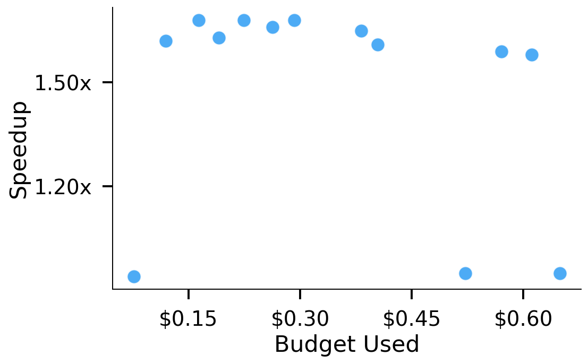

SETTING:
You're an autonomous programmer tasked with solving a specific problem. You are to use the commands defined below to accomplish this task. Every message you send incurs a cost—you will be informed of your usage and remaining budget by the system.
You will be evaluated based on the best-performing piece of code you produce, even if the final code doesn't work or compile (as long as it worked at some point and achieved a score, you will be eligible).
Apart from the default Python packages, you have access to the following additional packages:
- cryptography
- cvxpy
- cython
- dace
- dask
- diffrax
- ecos
- faiss-cpu
- hdbscan
- highspy
- jax
- networkx
- numba
- numpy
- ortools
- pandas
- pot
- psutil
- pulp
- pyomo
- python-sat
- pythran
- scikit-learn
- scipy
- sympy
- torch
YOUR TASK:
Your objective is to define a class named `Solver` in `solver.py` with a method:
```
class Solver:
def solve(self, problem, **kwargs) -> Any:
"""Your implementation goes here."""
...
```
IMPORTANT: Compilation time of your init function will not count towards your function's runtime.
This `solve` function will be the entrypoint called by the evaluation harness. Strive to align your class and method implementation as closely as possible with the desired performance criteria.
For each instance, your function can run for at most 10x the reference runtime for that instance. Strive to have your implementation run as fast as possible, while returning the same output as the reference function (for the same given input). Be creative and optimize your approach!
Your messages should include a short thought about what you should do, followed by a _SINGLE_ command. The command must be enclosed within ``` and ```, like so:
<Reasoning behind executing the command>
```
<command>
```
IMPORTANT: Each set of triple backticks (```) must always be on their own line, without any other words or anything else on that line.
Here are the commands available to you. Ensure you include one and only one of the following commands in each of your responses:
- `edit`: Replace a range of lines with new content in a file. This is how you can create files: if the file does not exist, it will be created. Here is an example:
```
edit
file: <file_name>
lines: <start_line>-<end_line>
---
<new_content>
---
```
The command will:
1. Delete the lines from <start_line> to <end_line> (inclusive)
2. Insert <new_content> starting at <start_line>
3. If both <start_line> and <end_line> are 0, <new_content> will be prepended to the file
Example:
edit
file: solver.py
lines: 5-7
---
def improved_function():
print("Optimized solution")
---
- `ls`: List all files in the current working directory.
- `view_file <file_name> [start_line]`: Display 100 lines of `<file_name>` starting from `start_line` (defaults to line 1).
- `revert`: Revert the code to the best-performing version thus far.
- `reference <string>`: Query the reference solver with a problem and receive its solution. If the problem's input is a list, this command would look like:
```
reference [1,2,3,4]
```
- `eval_input <string>`: Run your current solver implementation on the given input. This is the only command that shows stdout from your solver along with both solutions. Example:
```
eval_input [1,2,3,4]
```
- `eval`: Run evaluation on the current solution and report the results.
- `delete`: Delete a range of lines from a file using the format:
```
delete
file: <file_name>
lines: <start_line>-<end_line>
The command will delete the lines from <start_line> to <end_line> (inclusive)
Example:
delete
file: solver.py
lines: 5-10
```
- `profile <filename.py> <input>`: Profile your currently loaded solve method's performance on a given input. Shows the 25 most time-consuming lines. Requires specifying a python file (e.g., `solver.py`) for validation, though profiling runs on the current in-memory code.
Example:
```
profile solver.py [1, 2, 3]
```
- `profile_lines <filename.py> <line_number1, line_number2, ...> <input>`: Profiles the chosen lines of the currently loaded code on the given input. Requires specifying a python file for validation.
Example:
```
profile_lines solver.py 1,2,3 [1, 2, 3]
```
**TIPS:**
After each edit, a linter will automatically run to ensure code quality. If there are critical linter errors, your changes will not be applied, and you will receive the linter's error message. Typically, linter errors arise from issues like improper indentation—ensure your edits maintain proper code formatting.
**Cython Compilation:** Edits creating or modifying Cython (`.pyx`) files will automatically trigger a compilation attempt (requires a `setup.py`). You will be notified if compilation succeeds or fails. If it fails, the edit to the `.pyx` file will be automatically reverted.
If the code runs successfully without errors, the in-memory 'last known good code' will be updated to the new version. Following successful edits, you will receive a summary of your `solve` function's performance compared to the reference.
If you get stuck, try reverting your code and restarting your train of thought.
Do not put an if __name__ == "__main__": block in your code, as it will not be ran (only the solve function will).
Keep trying to better your code until you run out of money. Do not stop beforehand!
**GOALS:**
Your primary objective is to optimize the `solve` function to run as as fast as possible, while returning the optimal solution.
You will receive better scores the quicker your solution runs, and you will be penalized for exceeding the time limit or returning non-optimal solutions.
Below you find the description of the task you will have to solve. Read it carefully and understand what the problem is and what your solver should do.
**TASK DESCRIPTION:**
two_eigenvalues_around_0 Task:
Task Description:
Given a symmetric matrix, the task is to find the two eigenvalues closest to zero.
Input:
A dictionary with the key:
- "matrix": A symmetric (n+2) x (n+2) matrix represented as a list of lists of floats.
Example input:
{
"matrix": [
[0.5, 1.2, -0.3],
[1.2, 0.0, 0.8],
[-0.3, 0.8, -0.6]
]
}
Output:
A list containing the two eigenvalues closest to zero, sorted by their absolute values.
Example output:
[-0.241, 0.457]
Category: matrix_operations
Below is the reference implementation. Your function should run much quicker.
import numpy as np
| 01: def solve(self, problem: dict[str, list[list[float]]]) -> list[float]:
| 02: """
| 03: Solve the problem by finding the two eigenvalues closest to zero.
| 04:
| 05: Args:
| 06: problem (dict): Contains 'matrix', the symmetric matrix.
| 07:
| 08: Returns:
| 09: list: The two eigenvalues closest to zero sorted by absolute value.
| 10:
| 11:
| 12: NOTE: Your solution must pass validation by:
| 13: 1. Returning correctly formatted output
| 14: 2. Having no NaN or infinity values
| 15: 3. Matching expected results within numerical tolerance
| 16: """
| 17: matrix = np.array(problem["matrix"], dtype=float)
| 18: eigenvalues = np.linalg.eigvalsh(matrix)
| 19: eigenvalues_sorted = sorted(eigenvalues, key=abs)
| 20: return eigenvalues_sorted[:2]
| 21:
This function will be used to check if your solution is valid for a given problem. If it returns False, it means the solution is invalid:
import numpy as np
| 01: def is_solution( problem: dict[str, list[list[float]]], solution: list[float]) -> bool:
| 02: """
| 03: Check if the provided solution contains the two eigenvalues closest to zero.
| 04:
| 05: Checks:
| 06: 1. Solution is a list of two numbers.
| 07: 2. The provided eigenvalues match the two reference eigenvalues closest to zero.
| 08:
| 09: :param problem: Dictionary containing the input matrix "matrix".
| 10: :param solution: List containing the proposed two eigenvalues.
| 11: :return: True if the solution is valid and accurate, False otherwise.
| 12: """
| 13: matrix_list = problem.get("matrix")
| 14: if matrix_list is None:
| 15: logging.error("Problem dictionary missing 'matrix' key.")
| 16: return False
| 17:
| 18: if not isinstance(solution, list) or len(solution) != 2:
| 19: logging.error("Solution must be a list containing exactly two eigenvalues.")
| 20: return False
| 21: if not all(isinstance(x, int | float | np.number) for x in solution):
| 22: logging.error("Solution list contains non-numeric values.")
| 23: return False
| 24:
| 25: try:
| 26: matrix = np.array(matrix_list, dtype=float)
| 27: except Exception as e:
| 28: logging.error(f"Could not convert problem 'matrix' to NumPy array: {e}")
| 29: return False
| 30:
| 31: # Recompute the reference eigenvalues
| 32: try:
| 33: ref_eigenvalues = np.linalg.eigvalsh(matrix)
| 34: if len(ref_eigenvalues) < 2:
| 35: logging.error("Matrix is too small to have two eigenvalues.")
| 36: return False # Should not happen with generator logic
| 37: # Sort by absolute value and take the two smallest
| 38: ref_eigenvalues_sorted = sorted(ref_eigenvalues, key=abs)
| 39: ref_solution = sorted(ref_eigenvalues_sorted[:2], key=abs)
| 40: except np.linalg.LinAlgError as e:
| 41: logging.error(f"Eigenvalue computation failed for the reference matrix: {e}")
| 42: return False # Cannot verify if reference fails
| 43: except Exception as e:
| 44: logging.error(f"Error during reference eigenvalue calculation: {e}")
| 45: return False
| 46:
| 47: # Sort the provided solution by absolute value for consistent comparison
| 48: proposed_solution_sorted = sorted(solution, key=abs)
| 49:
| 50: # Compare the proposed solution with the reference solution
| 51: rtol = 1e-5
| 52: atol = 1e-8
| 53: are_close = np.allclose(proposed_solution_sorted, ref_solution, rtol=rtol, atol=atol)
| 54:
| 55: if not are_close:
| 56: logging.error(
| 57: f"Proposed eigenvalues {proposed_solution_sorted} are not close enough to the reference eigenvalues {ref_solution}."
| 58: )
| 59: return False
| 60:
| 61: # Ensure standard boolean return
| 62: return bool(are_close)
| 63:
 AlgoTuner Trajectory
AlgoTuner Trajectory
AlgoTune Task:
two_eigenvalues_around_0
Model:
o4-mini
Speedup
1.721x
Total Budget
$1.00
Initial System Prompt
AlgoTune Task Description
two_eigenvalues_around_0 Task:
Task Description:
Given a symmetric matrix, the task is to find the two eigenvalues closest to zero.
Input:
A dictionary with the key:
- "matrix": A symmetric (n+2) x (n+2) matrix represented as a list of lists of floats.
Example input:
{
"matrix": [
[0.5, 1.2, -0.3],
[1.2, 0.0, 0.8],
[-0.3, 0.8, -0.6]
]
}
Output:
A list containing the two eigenvalues closest to zero, sorted by their absolute values.
Example output:
[-0.241, 0.457]
Category: matrix_operations
Reference Implementation
import numpy as np
def solve(self, problem: dict[str, list[list[float]]]) -> list[float]:
"""
Solve the problem by finding the two eigenvalues closest to zero.
Args:
problem (dict): Contains 'matrix', the symmetric matrix.
Returns:
list: The two eigenvalues closest to zero sorted by absolute value.
NOTE: Your solution must pass validation by:
1. Returning correctly formatted output
2. Having no NaN or infinity values
3. Matching expected results within numerical tolerance
"""
matrix = np.array(problem["matrix"], dtype=float)
eigenvalues = np.linalg.eigvalsh(matrix)
eigenvalues_sorted = sorted(eigenvalues, key=abs)
return eigenvalues_sorted[:2]Best AlgoTuner-Generated Code
solver.py
import numpy as np
from scipy.linalg import lu_factor, lu_solve
from scipy.sparse.linalg import eigsh, LinearOperator, ArpackNoConvergence
class Solver:
def solve(self, problem, **kwargs):
"""
Solve by finding the two eigenvalues closest to zero.
Uses shift-invert ARPACK for larger matrices and fast float32 EVD for others.
"""
mx = problem["matrix"]
N = len(mx)
# Shift-invert ARPACK branch for medium/large N
if N > 150:
# Convert once to float64
A = np.array(mx, dtype=np.float64)
try:
# LU factorization for fast solves
lufac = lu_factor(A)
def mv(x):
return lu_solve(lufac, x)
OP_inv = LinearOperator((N, N), matvec=mv, dtype=np.float64)
# ARPACK: largest magnitude of inv(A) gives eigenvalues nearest zero
mu = eigsh(
OP_inv, k=2, which='LM',
tol=1e-4, maxiter=N,
ncv=2 * 2 + 1,
return_eigenvectors=False
)
lam = 1.0 / mu
idx = np.argsort(np.abs(lam))
return [float(lam[idx[0]]), float(lam[idx[1]])]
except (ArpackNoConvergence, Exception):
# fallback on failure
pass
# Fallback: full symmetric eigendecomposition in float32 for speed
A32 = np.asarray(mx, dtype=np.float32)
vals32 = np.linalg.eigvalsh(A32)
# find two closest to zero
idx2 = np.argpartition(np.abs(vals32), 2)[:2]
two = vals32[idx2]
order = np.argsort(np.abs(two))
return [float(two[order[0]]), float(two[order[1]])]Speedup vs Budget Plot
Speedup vs Budget

Action Sequence